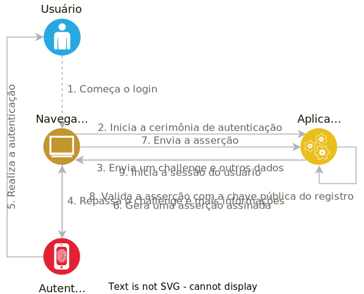

Sobre mim
Sobre mim

- Desenvolvedor há 15 anos
- Entusiasta em cibersegurança
- Consultor de TI e instrutor de treinamentos
- DevRel na FusionAuth
Campitelli
Slides
viniciuscampitelli.comGitHub
vcampitelliX Twitter
vcampitelliAgenda
Agenda
- O que é WebAuthn?
- Por que usar?
- O que e quais são os autenticadores?
- O que são cerimônias?
- Demo
O que é WebAuthn?
O que é WebAuthn?
This specification defines an API enabling the creation and use of strong, attested, scoped, public key-based credentials by web applications, for the purpose of strongly authenticating usersw3c.github.io/webauthn
O que é WebAuthn?
- Mais uma forma de autenticação
- Precisa de um autenticador
- Retira a necessidade de senhas
- Baseado em chaves públicas e privadas
- Parte do framework FIDO2, que veremos em breve
O que é WebAuthn?
- Primeira versão: 31/05/2016
- Versão estável: 27/04/2021
- Última versão: 16/08/2023
O que é WebAuthn?
FIDO
The FIDO ("Fast IDentity Online") Alliance is an open industry association launched in February 2013 whose stated mission is to develop and promote authentication standards that "help reduce the world’s over-reliance on passwords"Wikipedia: FIDO Alliance
O que é WebAuthn?
Framework FIDO2
Ação conjunta da FIDO Alliance com a World Wide Web Consortium (W3C) que criou dois padrões:
- Web Authentication:
WebAuthn - Client-to-Authenticator Protocol:
CTAP
O que é WebAuthn?
Fluxo
Senhas são ruins
Senhas são ruins
86%
das brechas em Basic Web Applications Attacks do Verizon Data Breach Investigations Report envolvem o uso de credenciais roubadas
Senhas são ruins
Qual o primeiro registro
de senhas digitais?
Em 1961, no sistema CTSS do MIT
E o primeiro
vazamento de senhas?
Em 1966, no mesmo sistema
Senhas são ruins
-
Difícil equilíbrio
- Complexas o bastante para não serem quebradas
- Simples o bastante para serem lembradas
- São normalmente reutilizadas pelos usuários
-
Muitos vazamentos
- 12.6 bilhões de contas em haveibeenpwned.com
Alternativas são ruins
-
Gerenciador de senhas
- Necessita de um servidor central para se tornar portável
- Alvo muito mais visado para atacantes
- A experiência pode não ser muito boa em alguns formulários
Alternativas são ruins
-
Duplo-fator de autenticação (2FA)
- Difícil de acertar na UX
- Pode não ser tão seguro (por exemplo, SMS)
- Usuários podem sofrer phishing
- Os desenvolvedores devem saber quando requisitar
Alternativas são ruins
-
Single Sign-On (SSO)
- Dependente do serviço de terceiros
- Pode ser alterado por questões financeiras
WebAuthn oferece equilíbrio
WebAuthn oferece equilíbrio
Em questões de segurança:
- Mesma tecnologia usada em SSH e TLS
- Disponível somente em HTTPS
- Dependente do nome do domínio (mitigando phishing)
- Envolve muitos pesquisadores e instituições confiáveis
- O banco de dados do servidor não possui informações sigilosas
WebAuthn oferece equilíbrio
Em questões de experiência do usuário:
- Embutido nos navegadores
- Sem possibilidade de perder senhas
- Resistente a ataques de phishing
- Pode funcionar como 1º ou 2º fator - ou como dois fatores ao mesmo tempo através da verificação de usuários
Suporte
Suporte
caniuse.com/webauthnCerimônias
Cerimônias
The concept of a ceremony is an extension of the concept of a network protocol, with human nodes alongside computer nodes and with communication links that include user interface(s), human-to-human communication, and transfers of physical objects that carry data. What is out-of-band to a protocol is in-band to a ceremony.
— The WebAuthn specification
WebAuthn | Glossário: CerimôniaCerimônias
Registro
Envolve o processo de Atestação, em que o Servidor pode verificar a autenticidade do Autenticador e verificar suas funcionalidades
Autenticação
Onde ocorre a Asserção, em que o Servidor envia um valor aleatório para o Cliente, que retorna uma assinatura criada pelo Autenticador
Cerimônias » Registro
Atestação
Quando o autenticador registra um novo par de chaves para um serviço, ele assina a chave pública com seu certificado de atestação, que é embutido durante a fabricação, sendo específico para aquele modelo de dispositivos
Através do Attestation Statement Format, é possível saber mais informações sobre o tipo do dispositivo que emitiu o par de chaves
Por questões de privacidade, só é recomendado utilizar em situações muito específicas, como por exemplo aplicações governamentais ou de bancos
Attestation and Assertion | MDNCerimônias » Registro
Atestação
Para confirmar que o autenticador é legítimo, há um repositório central com os metadados dos dispositivos reconhecidos em fidoalliance.org/metadata
{
"aaguid": "08987058-cadc-4b81-b6e1-30de50dcbe96",
"metadataStatement": {
"legalHeader": "Submission of this statement and retrieval and use of this statement indicates acceptance of the appropriate agreement located at https://fidoalliance.org/metadata/metadata-legal-terms/.",
"aaguid": "08987058-cadc-4b81-b6e1-30de50dcbe96",
"description": "Windows Hello Hardware Authenticator",
"authenticatorVersion": 1,
"protocolFamily": "fido2",
"schema": 3,
"upv": [{ "major": 1, "minor": 0 }],
"authenticationAlgorithms": [ "rsassa_pkcsv15_sha256_raw" ],
"publicKeyAlgAndEncodings": [ "cose" ],
"attestationTypes": [ "attca" ],
"userVerificationDetails": [
[{ "userVerificationMethod": "eyeprint_internal" }],
[{ "userVerificationMethod": "passcode_internal" }],
[{ "userVerificationMethod": "fingerprint_internal" }],
[{ "userVerificationMethod": "faceprint_internal" }]
],
"keyProtection": [ "hardware" ],
"isKeyRestricted": false,
"matcherProtection": [ "software" ],
"attachmentHint": [ "internal" ],
"tcDisplay": [],
"attestationRootCertificates": [
"MIIF9TCCA92gAwIBAgIQXbYwTgy/J79JuMhpUB5dyzANBgkqhkiG9w0BAQsFADCBjDELMAkGA1UEBhMCVVMxEzARBgNVBAgTCldhc2hpbmd0b24xEDAOBgNVBAcTB1JlZG1vbmQxHjAcBgNVBAoTFU1pY3Jvc29mdCBDb3Jwb3JhdGlvbjE2MDQGA1UEAxMtTWljcm9zb2Z0IFRQTSBSb290IENlcnRpZmljYXRlIEF1dGhvcml0eSAyMDE0MB4XDTE0MTIxMDIxMzExOVoXDTM5MTIxMDIxMzkyOFowgYwxCzAJBgNVBAYTAlVTMRMwEQYDVQQIEwpXYXNoaW5ndG9uMRAwDgYDVQQHEwdSZWRtb25kMR4wHAYDVQQKExVNaWNyb3NvZnQgQ29ycG9yYXRpb24xNjA0BgNVBAMTLU1pY3Jvc29mdCBUUE0gUm9vdCBDZXJ0aWZpY2F0ZSBBdXRob3JpdHkgMjAxNDCCAiIwDQYJKoZIhvcNAQEBBQADggIPADCCAgoCggIBAJ+n+bnKt/JHIRC/oI/xgkgsYdPzP0gpvduDA2GbRtth+L4WUyoZKGBw7uz5bjjP8Aql4YExyjR3EZQ4LqnZChMpoCofbeDR4MjCE1TGwWghGpS0mM3GtWD9XiME4rE2K0VW3pdN0CLzkYbvZbs2wQTFfE62yNQiDjyHFWAZ4BQH4eWa8wrDMUxIAneUCpU6zCwM+l6Qh4ohX063BHzXlTSTc1fDsiPaKuMMjWjK9vp5UHFPa+dMAWr6OljQZPFIg3aZ4cUfzS9y+n77Hs1NXPBn6E4Db679z4DThIXyoKeZTv1aaWOWl/exsDLGt2mTMTyykVV8uD1eRjYriFpmoRDwJKAEMOfaURarzp7hka9TOElGyD2gOV4Fscr2MxAYCywLmOLzA4VDSYLuKAhPSp7yawET30AvY1HRfMwBxetSqWP2+yZRNYJlHpor5QTuRDgzR+Zej+aWx6rWNYx43kLthozeVJ3QCsD5iEI/OZlmWn5WYf7O8LB/1A7scrYv44FD8ck3Z+hxXpkklAsjJMsHZa9mBqh+VR1AicX4uZG8m16x65ZU2uUpBa3rn8CTNmw17ZHOiuSWJtS9+PrZVA8ljgf4QgA1g6NPOEiLG2fn8Gm+r5Ak+9tqv72KDd2FPBJ7Xx4stYj/WjNPtEUhW4rcLK3ktLfcy6ea7Rocw5y5AgMBAAGjUTBPMAsGA1UdDwQEAwIBhjAPBgNVHRMBAf8EBTADAQH/MB0GA1UdDgQWBBR6jArOL0hiF+KU0a5VwVLscXSkVjAQBgkrBgEEAYI3FQEEAwIBADANBgkqhkiG9w0BAQsFAAOCAgEAW4ioo1+J9VWC0UntSBXcXRm1ePTVamtsxVy/GpP4EmJd3Ub53JzNBfYdgfUL51CppS3ZY6BoagB+DqoA2GbSL+7sFGHBl5ka6FNelrwsH6VVw4xV/8klIjmqOyfatPYsz0sUdZev+reeiGpKVoXrK6BDnUU27/mgPtem5YKWvHB/soofUrLKzZV3WfGdx9zBr8V0xW6vO3CKaqkqU9y6EsQw34n7eJCbEVVQ8VdFd9iV1pmXwaBAfBwkviPTKEP9Cm+zbFIOLr3V3CL9hJj+gkTUuXWlJJ6wVXEG5i4rIbLAV59UrW4LonP+seqvWMJYUFxu/niF0R3fSGM+NU11DtBVkhRZt1u0kFhZqjDz1dWyfT/N7Hke3WsDqUFsBi+8SEw90rWx2aUkLvKo83oU4Mx4na+2I3l9F2a2VNGk4K7l3a00g51miPiq0Da0jqw30PaLluTMTGY5+RnZVh50JD6nk+Ea3wRkU8aiYFnpIxfKBZ72whmYYa/egj9IKeqpR0vuLebbU0fJBf880K1jWD3Z5SFyJXo057Mv0OPw5mttytE585ZIy5JsaRXlsOoWGRXE3kUT/MKR1UoAgR54c8Bsh+9Dq2wqIK9mRn15zvBDeyHG6+czurLopziOUeWokxZN1syrEdKlhFoPYavm6t+PzIcpdxZwHA+V3jLJPfI="
],
"icon": "",
"authenticatorGetInfo": {
"versions": [ "FIDO_2_0" ],
"aaguid": "08987058cadc4b81b6e130de50dcbe96",
"options": {
"plat": true,
"rk": true,
"up": true
},
"maxCredentialCountInList": 100,
"maxCredentialIdLength": 32,
"transports": [ "internal" ],
"algorithms": [{ "type": "public-key", "alg": -257 }],
"minPINLength": 4,
"firmwareVersion": 19042
}
},
"statusReports": [
{
"status": "FIDO_CERTIFIED_L1",
"effectiveDate": "2020-08-05",
"certificationDescriptor": "Windows Hello Hardware Authenticator",
"certificateNumber": "FIDO20020190418002",
"certificationPolicyVersion": "1.3.6",
"certificationRequirementsVersion": "1.1.0"
},
{
"status": "FIDO_CERTIFIED",
"effectiveDate": "2020-08-05"
}
],
"timeOfLastStatusChange": "2020-08-05"
}
Cerimônias
Registro
Cerimônias » Autenticação
Asserção
Autenticadores
Autenticadores
Via Hardware Externo:
- São cross-platform
- Relativamente caros: a Yubikey sai por US$50 no site oficial ou entre R$300-400 no Brasil
- Exemplos:
Autenticadores
Via Plataforma:
- Embutidos no próprio sistema operacional
- Geralmente acompanham hardware, como o Secure Enclave da Apple ou o TPM em Windows
-
Exemplos:
- Windows Hello
- Apple Touch ID
- Android Fingerprint
Autenticadores
Via Software:
- Para desenvolvimento, é possível utilizar emuladores, como o Google Chrome ou essa extensão
Presença vs Verificação
Presença vs Verificação
Presença do Usuário
- Usuário deve possuir acesso ao autenticador
- Sempre obrigatório
Verificação do Usuário
- Usuário providencia algo a mais ao autenticador, como um pin ou biometria
Presença vs Verificação
-
O servidor deve especificar se deseja Verificação
-
Pode ser
preferred,requiredoudiscouraged - Apenas suportado em alguns autenticadores
-
Pode ser
-
Dica:
- Para autenticação, exija a Verificação
- Como 2º fator, é aceitável usar Presença
Código
Código
Criando uma credencial no navegador:
const credential = await navigator.credentials.create({
publicKey: {
challenge: base64url.toBuffer(challengeEnviadoPeloServidor),
rp: {
name: "Vinícius Campitelli",
id: "viniciuscampitelli.com",
},
user: {
id: base64url.toBuffer(user.id),
name: user.name,
displayName: user.displayName,
},
pubKeyCredParams: [{alg: -7, type: "public-key"}], // -7 => ES256
authenticatorSelection: {
authenticatorAttachment: "cross-platform", // ou "platform"
},
timeout: 60000,
attestation: "direct"
}
});
Código
Criando uma credencial no navegador:
// console.log(credential);
PublicKeyCredential {
id: "PLdxbMe6vLX3SEDDLQysLV6StR9zLWRss3VH4u6TT192p-snes-IbSajJD_V5G8mZJWLIPxJAlGvwuM",
rawId: ArrayBuffer(59),
response: AuthenticatorAttestationResponse {
clientDataJSON: {
type: "webauthn.create",
challenge: "...", // confira com o challenge anterior
origin: "https://viniciuscampitelli.com"
},
attestationObject: {
authData: {
attestedCredentialData: {
credentialId: …,
credentialPublicKey: …
}
},
fmt: "fido-u2f",
attStmt: {
sig: Uint8Array(70),
x5c: Array(1),
},
},
},
type: "public-key"
}
Código
Agora, você deve enviar os dados gerados em credential para o servidor, que
deve realizar as validações necessárias para iniciar sua sessão
const publicKeyCredentialRequestOptions = {
challenge: Uint8Array.from(
randomStringFromServer, c => c.charCodeAt(0)),
allowCredentials: [{
id: Uint8Array.from(
credentialId, c => c.charCodeAt(0)),
type: 'public-key',
transports: ['usb', 'ble', 'nfc'],
}],
timeout: 60000,
}
const assertion = await navigator.credentials.get({
publicKey: publicKeyCredentialRequestOptions
});
Demo
Demo
Acesse webauthn.viniciuscampitelli.com ou escaneie o QR Code abaixo:
Demo
Se quiser executar localmente:
- Instale o mkcert ou use a própria OpenSSL para criar uma CA e gerar um certificado SSL para seu site local
- Adicione uma entrada no
/etc/hostsparawebauthn.local - Clone este repositório e entre na pasta
demo - Acesse a aplicação em webauthn.local:8080
$ git clone --recursive git@github.com:vcampitelli/slides-webauthn.git
$ cd demo
$ npm run mkcert
$ echo "127.0.0.1 webauthn.local" | sudo tee -a /etc/hosts
$ npm install
$ npm run build
$ npm run serve
Referências
Referências
Treinamentos in company